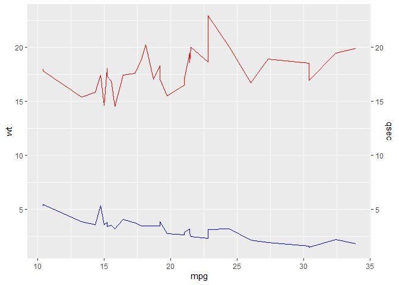
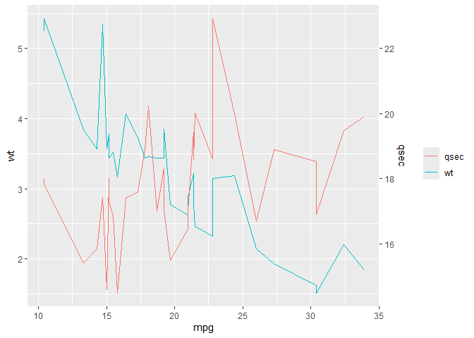
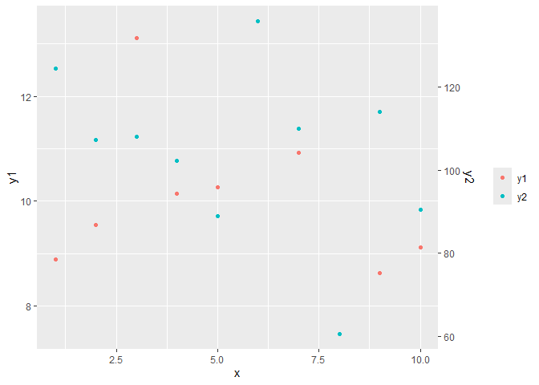
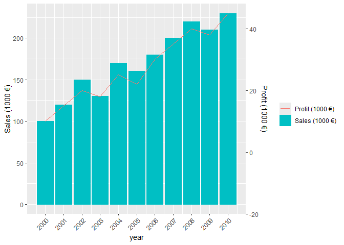

The goal of daplot is to provide a simplified interface for creating a plot with a dual axis in ggplot2.
Installation
You can install the development version of daplot from GitHub with:
# install.packages("pak")
pak::pak("TeroJii/daplot")Motivation
The ggplot2 package provides an incredibly rich and extensive functionality for creating a huge variety of plots. Let’s take the following visualization as an example:
library(ggplot2)
mtcars |>
ggplot(aes(x = mpg)) +
geom_line(aes(y = wt), color = "blue") +
geom_line(aes(y = qsec), color = "red") +
scale_y_continuous(
name = "wt",
sec.axis = sec_axis(~ ., name = "qsec")
)
This produces an elegant visualization which allows us to compare two variables as a function of a third one. However, as we can see, the magnitude of the variables in absolute units is quite different. In some cases we might want to compare two variables with different scales more easily. This requires scaling of one of the variables to fit the scale of the other variable. This is possible with ggplot2, but it requires some additional steps and calculations. This is where the daplot function comes in handy. It provides a simplified interface for creating dual-axis plots without the need for manual scaling.

Using other plotting geoms
The default geom used in daplot is ggplot2::geom_line. However, you can (basically) use any geom you like by specifying the y1_geom and y2_geom arguments. For example, you can use ggplot2::geom_point to create a scatter plot:
set.seed(123)
data.frame(
x = 1:10,
y1 = rnorm(10, 10, 2),
y2 = rnorm(10, 100, 20)
) |>
daplot(x, y1, y2, y1_geom = ggplot2::geom_point, y2_geom = ggplot2::geom_point)
Specifying y2_geom is actually not needed here, as it defaults to the same geom as y1_geom if not provided.
Combining different geoms
We can also use daplot to combine different plot geoms for the two variables.
data.frame(
year = 2000:2010,
sales = c(100, 120, 150, 130, 170, 160, 180, 200, 220, 210, 230),
profit = c(10, 15, 20, 18, 25, 22, 30, 35, 40, 38, 45)
) |>
daplot(
year,
sales,
profit,
y1_geom = ggplot2::geom_col,
y2_geom = ggplot2::geom_line,
y1_label = "Sales (1000 €)",
y2_label = "Profit (1000 €)"
) +
ggplot2::scale_x_continuous(breaks = 2000:2010) +
ggplot2::theme(axis.text.x = ggplot2::element_text(angle = 45, hjust = 1))
Responsible use of dual-axis plots
Dual-axis plots can be useful for comparing two variables with different scales, but they can also be misleading if not used carefully. It is important to ensure that the scaling of the variables does not distort the interpretation of the data. Always consider whether a dual-axis plot is the best way to represent your data, and provide clear labels and legends to help interpret the plot correctly.